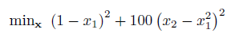

Unconstrained Nonlinear Optimization (UNO)
Introduction
An unconstrained nonlinear problem has the following form:
Where f is a function containing the nonlinear objective function.
The goal is to minimize the objective function by selecting a value of x.
Example Problem

The above function is the classic Rosenbrock banana function which has a minimum at (1,1) with fval = 0. This should be written as a Matlab function or anonymous function for use with the optimizer:
% Objective Function
obj = @(x) (1 - x(1))^2 + 100*(x(2) - x(1)^2)^2;
This can be solved using the OPTI Toolbox as follows:
% Build OPTI Problem
Opt = opti('obj',obj,'ndec',2)
% Solve
x0 = [0;0];
x = solve(Opt,x0)
And the solution is:
x =
1.0000
1.0000
To better visualize the solution, this can be plotted as follows:
plot(Opt,[],1) %indicates to log scale the objective contours
Considerations
You must supply ndec to optiprob in order for the opti constructor to determine the number of variables (and perform error checking). Alternatively you may provide an initial starting guess (x0) to optiprob, which will be used by solve as well. However you may still try alternative starting guesses by supplying them directly to solve, this is just a requirement for building the problem.
While your problem may not have any constraints, it is worthwhile to include at least bounds on the problem in order to both help the solver, as well as keep the solution within the operating area of interest. Therefore these problems are typically best posed as bounded NLPs.
Copyright © 2011-2013 Jonathan Currie (I2C2)